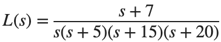
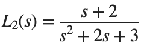

Root Locus
English translation
Execution conditions
MATLAB · Control System Toolbox
Learning objectives
Examine how choosing a gain relates to pole locations and the time response.
Gain and closed-loop poles
Starting conditions

. Use .Procedure
- Plot the root locus and mark the poles of feedback(K*L,1) for each K using distinct symbols.
- Tabulate the real parts of the poles and stability for each case.
- Predict pole movements and response changes relative to the baseline condition .
Results to retain
- 1 root-locus plot and a pole table for each K.
s=tf('s'); L=(s+7)/(s*(s+5)*(s+15)*(s+20)); figure; rlocus(L);
for k=[100 500 1000], disp(k); disp(pole(feedback(k*L,1))); end
Record results and self-check
K | |
Closed-loop Pole | |
Maximum real part | |
Stability |
Points to check
- Do the root-locus points match the directly calculated closed-loop poles?
- Are complex roots still conjugate pairs?
Testing predictions with time responses
Starting conditions
Apply a unit step over s to the same model and gain.
Procedure
- Calculate overshoot and settling time only for stable cases.
- Explain the relationship between the slowest pole pair and oscillation and decay in the time response.
- : add one value above or below this and test your prediction.
Results to retain
- A response plot and performance table including all 4 conditions.
s=tf('s'); L=(s+7)/(s*(s+5)*(s+15)*(s+20)); t=linspace(0,8,1601)';
T=feedback(500*L,1); figure; step(T,t); xlabel('Time [s]'); grid on
% TODO: Add responses for the remaining two gains.
Record results and self-check
K | |
Overshoot [%] | |
Settling Time [s] | |
Agreement with predictions |
Points to check
- Did you avoid forcing convergence metrics for unstable cases?
- Did you distinguish predictions based on poles from actual observations?
Applying the same procedure to other models
Starting conditions
Use

and .Procedure
- Create a root-locus plot, pole table, and step plot for L2 in the same format.
- Determine whether gain changes produce the same pattern in the higher-order model L and in L2.
- Explain whether conclusions from one model can be applied directly to another.
Results to retain
- A comparison summary table for both models and a brief interpretation.
s=tf('s'); L2=(s+2)/(s^2+2*s+3);
for k=[.5 2 10], disp(k); disp(pole(feedback(k*L2,1))); end
Record results and self-check
Model | |
K | |
Pole | |
Overshoot [%] | |
Settling Time [s] |
Points to check
- Did you reconstruct the closed-loop expression for each model?
- Did you avoid treating equal gain values as evidence of equal performance in the two systems?